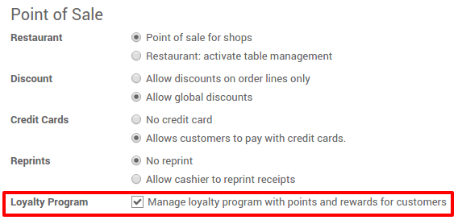
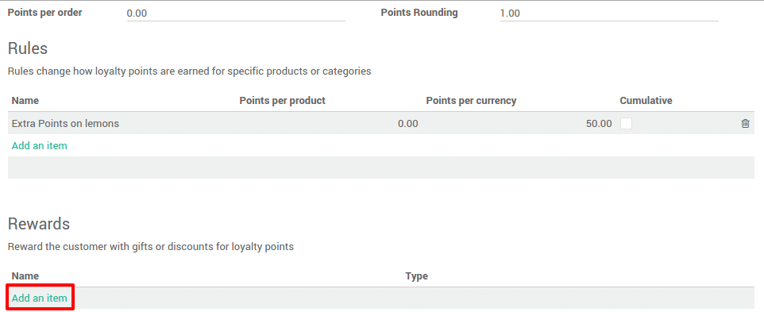
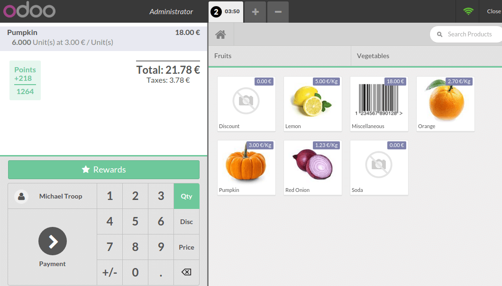

Настройка
В приложении Рабочее Место Кассира перейдите .

Вы можете установить галочку напротив пункта Управление программой лояльности с накопительными баллами и бонусами для клиентов.
Создать программу лояльности
После установки, перейдите в пункт меню :menuselection:[UNKNOWN NODE problematic]Конфигурация --> Программы Лояльности и нажмите на кнопку Создать.

Настройте имя и количество начисляемых баллов, на сумму, на заказ или на товары. Могут быть добавлены дополнительные правила , такие как дополнительные баллы на товар.
Для этого нажмите на Добавить элемент под пунктом Правила.

Вы можете настроить любые правила, изменяя параметры конфигурации.
Имя: Внутренний идентификатор правила для данной программы лояльности
Тип: Это правило касается конкретных товаров, или их категорий?
Целевой товар: Товарная позиция, на которую действует правило
Целевая Категория: Категория, которую затрагивает данное правило
Накопления: Количество очков, которое надо набрать для выполнения этого правила в дополнение к другим правилам
Начисление очков за товар: Сколько очков будем начисляться за заказанный товар
Начисления очков на сумму: Сколько очков будет начисляться за продукт при данной цене реализации
Новое правило будет создано и бонусы могут быть добавлены, если вы нажмете на Добавить элемент под пунктом Бонусы.
Существует три вида бонусов:
Перепродажа: конвертируем очки в деньги. Установите товар, который представляет ценность в 1 балл.
Скидка: предоставляется скидка за набранное количество очков. Создайте товар с ценой
0и без всяких налогов.

Подарок: выдается подарок за набранное количество баллов

Применение программы лояльности к кассе
На Инфо Панели, нажмите на кнопку .

Далее выберите программу, которую вы хотите установить.

Сбор и начисление очков
Для начисления очков необходимо назначить клиента на текущий заказ.
Нажмите на Клиент и выберите того, кого нужно.
Накопленные баллы будут появляться на экране.

В следующий раз, когда клиент придет в ваш магазин и будет достаточно очков, чтобы получить бонус, кнопка Бонусы подсветится, и вы сможете выдать подарки.
При добавлении бонуса баллы будут вычтены из суммы уже накопленных.